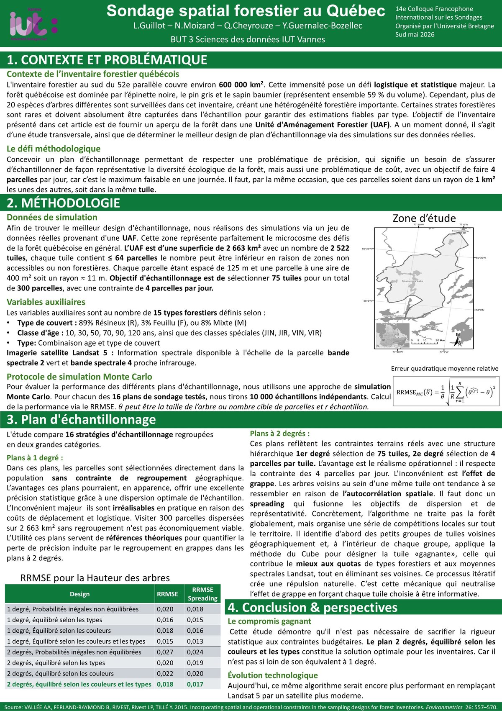

Le projet en chiffres
Contexte & Problématique
L. Guillot — N. Moizard — Q. Cheyrouze — Y. Guernalec-Bozellec | BUT 3 Science des données, IUT Vannes
Contexte : L'inventaire forestier au sud du 52e parallèle couvre environ 600 000 km² au Québec. La forêt est dominée par l'épinette noire et le sapin baumier (59 % du volume). Plus de 20 espèces d'arbres sont surveillées dans cet inventaire, créant une hétérogénéité forestière importante qui rend les estimations difficiles.
Objectif : Concevoir un plan d'échantillonnage permettant d'estimer les caractéristiques forestières d'une Unité d'Aménagement Forestier (UAF) en respectant une contrainte budgétaire forte : 4 parcelles par jour maximum, toutes situées dans un rayon de 1 km² (même tuile).
Défi méthodologique :
- Assurer la représentativité de la diversité écologique de la forêt.
- Respecter la contrainte de coût logistique (4 parcelles/jour dans une même tuile).
- Éviter l'effet de grappe dû à l'autocorrélation spatiale des tuiles voisines.
Méthodologie
Zone d'étude
UAF : 2 663 km²
Tuiles : 2 522 (125 m d'espacement, 400 m² chacune)
Parcelles/tuile : ≤ 64 (variable selon accessibilité)
Cible : 75 tuiles → 300 parcelles totales
Variables auxiliaires
15 types forestiers :
89% Résineux, 3% Feuillu, 8% Mixte
Classes d'âge : 10, 30, 50, 70, 90, 120 ans + classes spéciales
Imagerie : Landsat 5 (bandes spectrales 2 vert et 4 proche infrarouge)
Évaluation
Simulation Monte Carlo :
10 000 échantillons indépendants par plan.
Critère : RRMSE (Erreur Quadratique Moyenne Relative) pour la hauteur des arbres.
RRMSE formula :
Minimisation de l'écart entre estimation et vraie valeur θ.
Deux grandes familles de plans testées
🔴 Plans à 1 degré — Théoriques
Les parcelles sont sélectionnées directement dans la population sans contrainte de regroupement géographique. Ces plans offrent, en apparence, une dispersion optimale mais sont irréalisables en pratique : visiter 300 parcelles dispersées sur 2 663 km² sans regroupement n'est pas économiquement viable. Ils servent de références théoriques pour quantifier la perte de précision des plans à 2 degrés.
🟢 Plans à 2 degrés — Opérationnels
La sélection s'opère en deux temps : 1er degré — sélection de 75 tuiles, 2e degré — sélection de 4 parcelles par tuile. Ces plans respectent la contrainte logistique des 4 parcelles/jour. Ils présentent cependant un risque d'effet de grappe lié à l'autocorrélation spatiale entre parcelles d'une même tuile.
L'algorithme Spreading — innovation clé
Pour neutraliser l'effet de grappe, nous utilisons l'algorithme Spreading qui fusionne les objectifs de dispersion et de représentativité. Concrètement, il :
- Identifie d'abord des petits groupes de tuiles voisines géographiquement.
- Au sein de chaque groupe, applique la méthode du Cube pour désigner la tuile "gagnante" (celle qui contribue le mieux aux quotas de types forestiers et aux moyennes spectrales Landsat).
- Crée ainsi une répulsion naturelle entre tuiles sélectionnées pour forcer la dispersion spatiale.
Résultats & Conclusion
🏆 Plan gagnant : 2 degrés, équilibré selon les couleurs et les types
Cette stratégie atteint un RRMSE de 0,017 avec l'algorithme Spreading (vs 0,018 sans), le meilleur résultat obtenu parmi les 16 stratégies testées. Elle concilie rigoureusement la contrainte budgétaire (4 parcelles/jour) et la représentativité statistique.
Résultat statistique
Le plan 2 degrés avec Spreading est statistiquement proche de son équivalent à 1 degré (RRMSE : 0,017 vs 0,015), démontrant qu'on peut respecter les contraintes terrain sans sacrifier la rigueur.
Impact opérationnel
Élimination des trajets inutiles et réduction des coûts de déplacement. Chaque journée de terrain est optimisée grâce au regroupement des 4 parcelles dans une même tuile de 1 km².
Perspectives technologiques
L'algorithme serait encore plus performant en remplaçant Landsat 5 par un satellite moderne, offrant une imagerie spectrale plus précise pour les variables auxiliaires.
Affiche de présentation — Colloque ISS 2026
Poster présenté au 14e Colloque Francophone International sur les Sondages, Université Bretagne Sud, mai 2026
